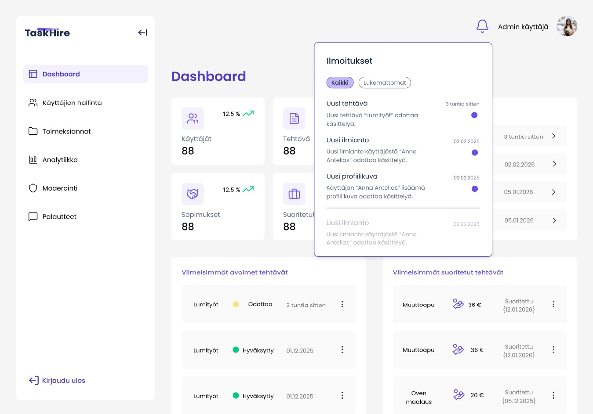
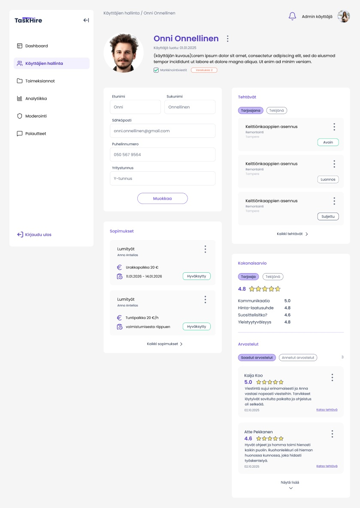
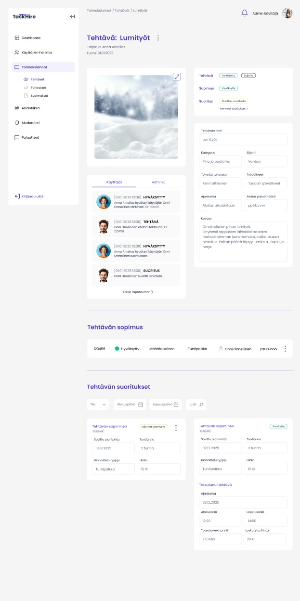
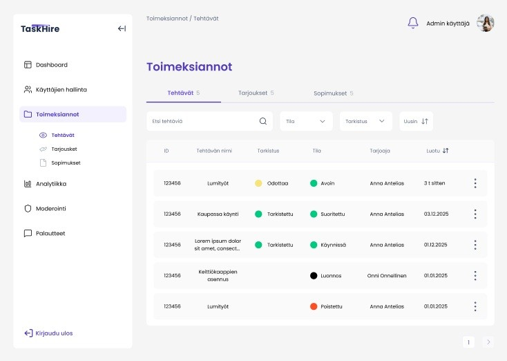
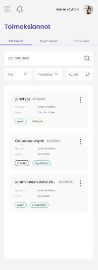
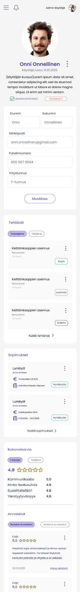
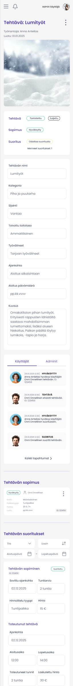

Admin paneeli verkkosivujen suunnittelu ja toteutus sovelluksen hallintaa varten
Suoritin viiden kuukauden mittaisen harjoitteluni keväällä 2026 Task Hire Oy:llä. Yrityksen pääsovellus Task Hire toimii alustana töiden, kuten ikkunoiden pesu, nurmikon leikkaus ja lumityöt ilmoittamiselle sekä suorittamiselle.
Harjoitteluni aikana vastuullani oli rakentaa kyseiselle sovellukselle admin paneeli verkkoon. Toimin projektissa kahdessa roolissa vastaten sekä admin paneelin UI/UX-suunnittelusta että sen toteuttamisesta frontend-puolella, ja aloitin työt täysin tyhjästä Figmasta.
Admin paneelin päätavoitteena oli luoda visuaalisesti selkeä ja mobiilisti toimiva työkalu sovelluksen tietojen hallintaan. Teknologioina toteutuksessa hyödynnettiin Reactia, TypeScriptiä, HTML:ää, CSS:ää sekä React Admin- ja MUI-kirjastoja.
Vastasin admin paneelin visuaalisesta ja toiminnallisesta suunnittelusta. Keskityin ymmärtämään järjestelmän ylläpitäjän tarpeita ja työskentelin palautekierrossa varmistaakseni, että lopputulos palvelee loppukäyttäjää mahdollisimman tehokkaasti.
Vastasin admin paneelin teknisestä toteutuksesta käyttäen Reactia, React Adminia ja TypeScriptiä. Rakensin responsiivisen ja modulaarisen käyttöliittymän, integroiden sen käyttäjään Firebase tietokantaa ja sinne luotuja Cloud Function funktioita. Toteutin sovellukseen toiminnallisuuksia, kuten dynaamisen tilanhallinnan ja monipuoliset datan hallintatyökalut.
Verkkosivuja lähdettiin suunnittelemaan Figmassa.



Opin lyhyessä ajassa hallitsemaan Reactin ja syvensin ymmärrystäni Firebase-ekosysteemistä, erityisesti frontendin ja backend-logiikan yhdistämisestä Cloud Functionseilla.
Opin, kuinka kriittistä on asettua loppukäyttäjän asemaan jo suunnitteluvaiheessa. Säännölliset palautekierrokset pomon kanssa opettivat minulle, miten suunnittelua iteroitaan tehokkaasti ja miten rakentava palaute muunnetaan suoraan paremmaksi käytettävyydeksi ja toiminnallisuuksiksi.
Opin hallitsemaan handoff-työskentelyn. Tämä sisälsi Figman tehokkaan käytön (mitat, assetit, komponentit) UX-suunnittelijoiden välillä sekä kriittisen vaiheen, jossa suunnitelmat siirretään frontend-kehittäjälle. Opin myös dokumentoimaan koodia ja rajapintoja niin, että jatkokehityksen aloittaminen on seuraavalle koodaajalle mahdollisimman sujuvaa.
Sovelluksen seuraavan version julkaisuaikataulu sekä harjoittelun pituus opetti minulle priorisoinnin merkityksen. Kun aika on rajallinen, on osattava keskittyä olennaisiin ydinominaisuuksiin. Opin hallitsemaan kehitystä niin, että lopputulos on julkaisukelpoinen ja laadukas, vaikka kaikkea suunniteltua ei olisikaan mahdollista toteuttaa kerralla.